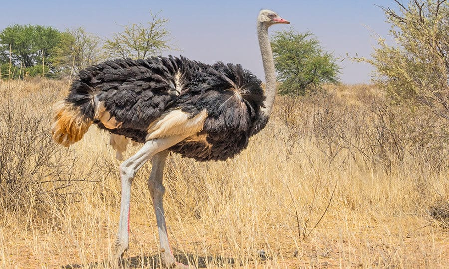

Notícias Cerrado
A fauna
A Ema

Por Gustavo Lobo, da Agência Senado
"A ema (Rhea americana), também conhecida como nandu, nandu-comum, nandu-grande, nhandu, guaripé e xuri, é uma ave da família Rheidae, nativa da América do Sul. É uma ave não voadora; e usa suas grandes asas apenas para se equilibrar enquanto corre. Os machos são os responsáveis pela incubação e o cuidado com os filhotes. A ema é considerada a maior ave brasileira."
Quando ocorreram as invasões holandesas no Brasil, figurava uma ema no brasão holandês do Rio Grande do Norte (1639). Dezenas de emas vivem nos jardins da residência oficial do Presidente do Brasil, o Palácio da Alvorada (38 em 2020). Segundo o Ibama, essas emas eram mantidas sem o registro necessário para sua criação, porém foram incluídas sob guarda provisória do Presidência da República em 2002, e atualmente a Presidência possui autorização para criar as aves, oriundas de criadouros conservacionistas.
Etimologia
"Ema" é uma palavra de origem oriental, ou molucana. "Nandu" e "nhandu" se originam do tupi ña'du. "Guaripé" também se origina da língua tupi. E "Xuri" se origina do tupi xu'ri.
Taxonomia e evolução
A ema foi descrita em 1758 pelo zoólogo sueco Carolus Linnaeus, em seu livro Systema Naturae. Atualmente, são reconhecidas cinco subespécies de emas, das quais três ocorrem no Brasil. As subespécies não são facilmente distinguíveis entre si, contudo, um dos principais traços de distinção é a mancha preta na garganta e a diferença na altura entre elas. As cinco subespécies são:
Descrição
A ema é a maior e mais pesada ave do continente americano. Um macho adulto pode atingir 1,70 m de comprimento e pesar até 36 kg. A envergadura pode atingir 1,50 m de comprimento.
Apresenta plumagem do dorso marrom-acinzentada, com a parte inferior mais clara. O macho distingue-se por ter a base do pescoço, parte do peito e parte anterior do dorso negros. Difere do avestruz por não apresentar cauda e pigóstilo. Também não possui glândula uropigiana. Ao contrário das demais aves, há separação das fezes e da urina na cloaca; os machos adultos possuem um grande pênis. Possui pernas fortes e pés providos de três dedos.
Ecologia e comportamento
Alimentação A ema é um animal omnívoro. Alimenta-se de frutas, sementes, insetos (como besouros e cupins), escorpiões, cobras, ratos, folhas de grandes árvores, lagartos, moluscos, peixes, entre outros.
Reprodução O período reprodutivo se inicia em outubro. O macho reúne um harém de três a seis fêmeas; e estas, por sua vez, também mantêm relações com outros machos, havendo, portanto, poliginia e poliandria na espécie.
O macho constrói o ninho em uma depressão no solo, forrando-o com capim. Cada fêmea é capaz de pôr de 10 até 30 ovos. A incubação começa entre cinco e oito dias após as fêmeas terem iniciado a postura e pode durar de 27 a 41 dias. Os ovos eclodem todos no mesmo dia, são brancos, geralmente elípticos, e pesam, em média, 600 gramas. Os que não eclodem são colocados para fora do ninho ou devorados. O macho, responsável por chocá-los, altera frequentemente a posição do ovo, girando uma volta completa (360º) a cada 24 horas. Os filhotes ficam a cuidado do pai e atingem a maturidade sexual em dois anos.
Predação As emas possuem poucos predadores devido a sua velocidade e alta vigilância, mas seu principal predador é a onça-pintada (Panthera onca) e o puma (Puma concolor), que as predam usando o elemento surpresa; e normalmente os ataques são à noite.
Os jovens podem ser predados por raposas-do-campo (Lycalopex vetulus), jaguatiricas (Leopardus pardallis) e raramente por lobos-guarás (Chrysocyon brachyurus), mas, assim como os predadores anteriormente citados, os ataques normalmente acontecem à noite.